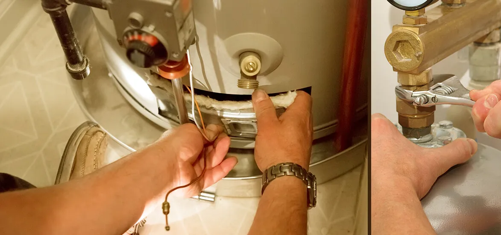

Should I Install A Water Heater Myself? 5 Mistakes to Avoid

The water heater is an essential appliance to have installed in every house in Los Angeles. So, it’s understandable if you are considering different ways of installing a water heater in your house in LA. However, if you’re planning to do it all by yourself, it’s better to rethink before getting into action. Water heater installation in Los Angeles is not a layman’s business, as it requires a certain understanding of technology and prior experience in installing heaters to avoid undesirable circumstances.
The DIY process of water heater installation is undoubtedly a commonly-suggested way to save money. Turn online, and many X/Y/Zs are there with their ‘guides’ on DIY water heater installation. But are they reliable?!
Well, if that were the case, a significant part of the price of a new heater would not account for its installation charge. Moreover, the chances of making mistakes while you are performing the installation task are very high. So in this article, we share different aspects of water heater installation in Los Angeles to help you decide if it is a smart decision to install a water heater by yourself. In addition, you get to find solutions to avoid the top 5 water heater installation mistakes.
Why Should You Not Install Water Heater Yourself?
No online guru tells you this about DIY water heater installation
Homeowners nowadays want to tackle appliance installation projects all by themselves. And ample information available online seems to influence such decisions of house owners. While not every bit of information you gather online is utter nonsense. It’s better to identify the demerits and challenges of it so that it does go heavy on your pocket in the end.
Installing the water heater in a DIY process can accompany several risks associated with the installation process. The water heaters are responsible for improving the condition of the home, and if unable to install properly, they can pose a severe threat to the home structure. It might also cause several health risks.
DIY water heater installation might seem to be a solid plan, but the process can end up leaving your family in great danger. The DIY process is presumably a great choice to save money on the installation. However, when it comes to the installation of a new water heater or a water heater replacement in Los Angeles, using DIY can be a very sensitive process. Conducting the DIY process can hamper the entire procedure of installation.
However, consulting with a professional contractor can be beneficial as well as a cost-effective choice. According to experts, only licensed professionals can handle this process with safety and efficiency. However, let’s have a look at the risks associated with the DIY water heater installation in Los Angeles.
Risks Associated With DIY Water Heater Installation Process
Before we jump into the most devastating problems that you have to avoid for a safe and effective water heater installation, it’s crucial to understand the underlying risks. Once you understand the risk better, it’s easier to ensure safety and avoid mistakes. Consequently, you can enjoy better facilities from the water heater installed at home.
Carbon Monoxide Poisons
DIY water heater installation in Los Angeles can pose several health threats along with posing a danger to the family members. DIY is a new trend that has been growing popular every day. Several YouTube videos on tutorials claim that people can install water-sensitive appliances like the water heater using the DIY process. But most of the time, they skip the part of risks and injuries associated with it.
Try to understand the basic thing that installing the wooden cabinets in your house and installing the water heater is not the same thing. In this case, installing the water heater might face several potential health threats like an explosion of carbon monoxide, fire, and explosion.
Most water heaters nowadays utilize gas to ease their performance. While dealing with such sensitive units, technicians give extra care. But in general, most people don’t understand how to handle or ventilate gases. Unwanted exposure to these gases can cause permanent brain damage and other health-related issues.
Gas Leaks
Most importantly, suppose there is a gas leak you will not know until it's too late. Along with this, improper water heater installation can cause co2 leaks. For instance, you can find several incidents occurring in the village side at the time of the installation of tankless water heaters. According to the professional water heater installation services, leakage of this gas can cause several health threats, including death.
Fire And Explosion
There is a chance of fire and explosion. When it comes to operating the gas water heater, you need to utilize combustible fuel. However, when this fuel burns, it can heat the water heater. These fuels are at a high chance of catching the flame and can pose several health risks along with explosions. Making the slightest mistakes can cause several issues and put your family members in danger.
Extra Money
One of the most common issues associated with the gas water heater installation is the installation of the water heater using the DIY process. Hence, it means that the installation process is not protected. Therefore, there is a higher chance that the water heater may get affected during DIY water heater installation in Los Angeles. Therefore, your attempt to save money goes in vain. On the contrary, you have to pay more or double the repair cost.
Issues In Drainage Systems
Water heater installation services can pose several issues related to the proper drainage system that can prevent water damage. Functional appliances like the water heater are highly associated with a decent drainage system. If the water connections are not precisely designed or they can pass the water, it may add extra stress to the drainage. However, it ultimately leads the entire system to the explosion.
5 Major Mistakes To Avoid While Installing The Water Heater
While opting for water heater installation in Los Angeles, people tend to commit some gruesome mistakes that cost them a hefty amount. However, committing these mistakes lead the process to the installation to the total discrepancies. So, if you are planning to replace your water heater or get a new water heater installation in Los Angeles, people can follow the basic mistakes while installing a water heater.

Mistake 1: Not Choosing The Proper Size
Choosing the wrong size is not accepted at all, but it is the most common mistake conducted by everyone. Tank-based water heaters might range from thirty to eighty gallons.
However, the size you require relies on the number of members in the household. Suppose you purchase a water heater that is so small; in this case, there is a chance of running out of water. But if the tank is so large, you will spend too much money on energy bills.
The best part will be if you install the water heater system by calculating your regular water usage. You may calculate it this way.
- Shower - 10 gallons/10minutes
- Washers(dish and glass) - approx 6 gallon/use
- Washing machines- approx 7 gallons/use
Therefore, while you are installing the water heater, make sure that you are choosing the water heater at your convenience. You may look at the energy guide label.
Mistake 2: Installing The Water Heater In An Inaccessible Location
Placing the water heater in the proper position is crucial. While installing the water heater, homeowners need to keep several things in mind, such as safety, efficiency, and convenience. Depending on the local area, there might be several issues associated with installation. Suppose you are opting for the water heater replacement in Los Angeles; in this case, you can’t just predict that the same place will work here also.
Generally, it happens that newer models are more upgraded than the old machines. In this case, you can’t expect that the same place will be appropriate for the new machines too. Moreover, if you are opting for water heater installation services, you also need to realize that smaller places can be suffocating for new installation. As we have previously discussed all the issues associated with the new installation process, you need to make sure that you don’t want any mishaps such as fire and explosion or gas leakage in your house.
Mistake 3: Overlooking Energy Efficiency
Who doesn’t want an energy-efficient system? However, most of the time, people make mistakes when the time comes to choosing an energy-efficient unit. In this case, homeowners should always be very careful while choosing the water heater. Generally, the energy efficiency depends on two things, i.e., functionality and size.
Suppose the water heater you are going to install is not properly upgraded or not in the size you want for your home. It may cause higher energy consumption. Higher energy consumption refers to spending a higher amount of money. Therefore, if you don’t want to spend a higher amount on energy efficiency, in this case, you need to make sure that you are choosing the modern technology with the right size. When the time comes to water heater installation in Los Angeles, enduring the energy efficiency of the machine is important.
Mistake 4: Not Following The Instruction
Avoiding the installation guide or instruction is not accepted at any cost. The installation guides are specially designed to ensure the safety of your family members. Before starting the installation of a water heater installation project, it is necessary for you to go through all the instructions.
Please note down or record beforehand all the tools that you might require for this project. Suppose you miss a single step; in this case, it may lead the water heater to disastrous flooding. Now, the problem is that these floors may cause the growth of the molds in your house in the longer term.
These molds also consume materials like drywall. However, in many countries, you need to acquire a permit to install the water heater. The permits ensure that the technicians follow all the basic codes related to the installation. Please, check the country code before opting for DIY water heater installation in Los Angeles.
Mistake 5: Placing The Drain Line In A Wrong Position
The water heater involves the use of a TPR valve. These valves are designed in such a way so that they can release the hot water in case the tank becomes over-pressurized. Therefore, while installing the machine, you need to make sure that you have attached the drainage line to the TPR valve to facilitate the flow of the water.
The drainage line should be emptied to the nearest floor drainage. Please make sure not to attach the drainage line near the drain pipe. However, if it happens, it may lead to the contaminated water breaking into the water heater. While opting for water heater replacement in Los Angeles or new water heater installation services, in this case, please make sure that you are not directly leaving the drain line straight to the ground. Suppose the water heating system gets vented during the service, the hot water may burn you.
How Can I Install The Water Heater Safely?
Installing a water heater in your home can be a tricky business. Moreover, if you want to opt for safe water heater installation in Los Angeles, it is always a smart idea to consult with a professional service provider for water heater replacement or new water heater installation services.